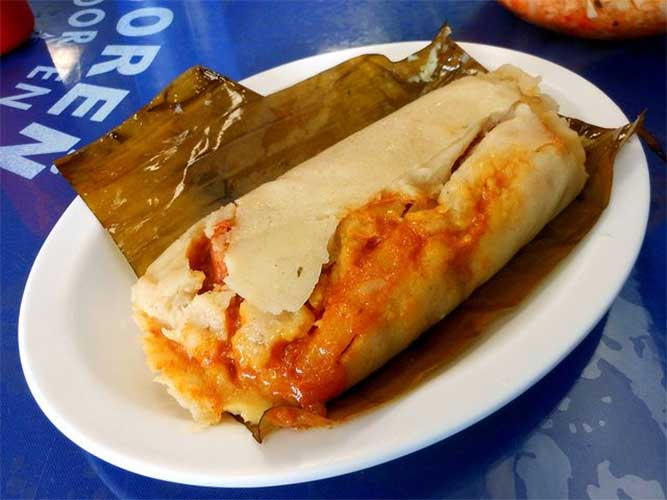

Tamale Recipe

Description:
The Salvadoran chicken tamale is the heart of Salvadoran cuisine. This delicious tamale is also known as tamal de pollo. It consists of a tasty corn dough that is filled with chicken and vegetables that is bathed in a delicious sauce. At the end of this process it is then covered with banana leaves and steam cooked.
Ingredients:
- 4 lbs Banana leaves
- 2 Tomatoes
- 1/2 Green Sweet Pepper
- 3 Garlic Cloves
- 7 Cilantro branches
- 1 Celery stick
- 1/2 Big onion
- 1.7 lbs Boneless chicken
- 3 Medium Potatos
- 2 Carrots
- 1 Can of Chickpeas
- 1 Can of Green Beans
- 1 Can of Green Olives
- 1 1/2 cups Corn Flour for tortillas
- 1/2 cups Vegetable Oil
- 8 cups Chicken Broth
- 3 tbsp Relajo a mix of Salvadorean spices
- 1/4 cups Cornmeal
- 1 tbsp Achiote annato
Steps
Let's Prepare the Banana Leaves
- Cut the leaves to a length of about a sheet of printing paper. Remove the vein with a knife.
- Wash the leaves with soap and water.
- Heat a griddle over medium heat.
- One or two cut leaves at a time: Lay one cut leaf on top of the hot flat griddle until the leaf turns from a strong vivid green to a less vivid green. Do not toast as it will break. If you want, you can press it in several parts with a spatula.
To cook the Chicken
- Cut the vegetables into small pieces.
- Put the vegetables and the boneless chicken in a pot. Add enough water so that the breasts and vegetables are covered and about 3 centimeters more.
- Put a fire in the pot over a medium heat. Boil for about 30 minutes.
- When the water is boiling, add salt, and your own seasoning if you lie, to taste.
Vegetable Ingredients for the Filling
- Cut the potatoes and carrots into cubes of a little less than 1x1 cm. Cut the green beans about 2 to 4 cm. Set it aside in a bowl.
- Open the cans of vegetables and put them aside in a bowl.
Let's go back to the Boiling Chicken
- After boiling for about 30 minutes, remove the chicken and put it on a plate.
- Shred the chicken. You can use forks if it's too hot. Put it aside in a bowl.
Now let's move on to making the corn masa batter for the tamales
- Put the corn flour to make tortillas (maseca or any other brand) in a container.
- Put 4 cups of the soup and vegies (DO NOT strain it) in a blender and blend very well.
- Add the blended soup to the corn flour, a little at a time, while stirring quickly with a spoon until you get a smooth paste.
- Add 2 more cups of the chicken broth (it's ok if it has vegetables in it) and mix again. (In total to 1 and 1/2 cup of corn flour we have added 6 cups of broth)
- In another pot over medium high heat, pour the batter that you just prepared. (from 1 to 10, medium high is 7)
- With a wooden spatula, begin to stir non-stop (if you stop the liguid at the bottom will burn and get a bad taste). Objective: To thicken the liquid. Never stop stirring. When it begins to thicken, add another cup of the chicken and vegetable broth. Keep beating. When it starts to thicken again, add another cup of the chicken and vegetable broth. Keep beating. I know, your arm hurts right now, but don't stop. You can do it!
- When it thickens again, add half a cup of vegetable oil. Lower the heat to medium. Keep beating non-stop. Stop beating 1 minute after the oil is completely combined.
- Pour all the contents into a container
Let's prepare the Recaudo (red sauce)
- Place the Relajo on a frying pan over medium heat. Stir with a spatula to toast a little (about 4 minutes)
- Place all the ingredients of the Recaudo in a blender: the relajo, the garlic, the achiote (annato), the tomatoes, the broth (with its vegetables) and the corn flour for tortilla.
- Blend well.
- Put a fine strainer on a small pot and pour the contents of the blender over the strainer. Use a spatula or your hands to apply pressure. Add a little water (one or two tablespoons) and press again. We do NOT need whatever is left on the strainer.
- Put the pot with the liquid on medium heat. Bring it to a boil. Move with a spatula when it starts to boil.
- Take it off the heat and put it in a bowl when it has boiled for about two minutes and is a little thick (as in the picture).
Let's start wrapping tamales
- Let's put all the ingredients we've prepared in their own bowls and containers on a table to get started.
- Put a banana leaf on the table. Place two tablespoons of the thick corn batter/dough in the center.
- Put a tablespoon of recaudo (the red sauce) on top, pressing lightly on the dough.
- Add an olive, two or three diced carrots and potato cubes, green beans, chicken meat (about a tablespoon), 2-3 chickpeas and any other vegetable you like on top.
- Take the part of the leaf that is close to you. Move it in front of the mixture and begin to roll it forward.
- When it is rulled put your 4 fingers on each side, lay them flat down, where the mixture end and put your thumbs underneath. Press and then fold the tips down.
- It is not necessary to tie them. Just put them on the table with the folded side down.
Let's prepare the deep pot for the tamales
- In an deep pot, put banana leaf veins on the bottom. Also put rolled leaves at the bottom if you don't have enough veins. The important thing is to make high spaces so that the tamales do not touch the metal of the pot and there is enough water at the bottom for steam.
- Place the tamales in the pot. Carefully. With the folds down. When the pot is almost full, place about two or three banana leaves on top of the tamales.
- Add about two to three cups of water to the pot. The tamales should not be left swimming in water. They will be cooked mostly with steam.
- Cook over high heat for 1 hour. NOTE: Check it every 20 minutes to make sure there is still water. If it needs more water, add more so that the bottom doesn't burn.
- After an hour of cooking, take one out, open it, and test that the potatoes are already cooked. If they already are, then the tamales are ready. Turn off the heat.